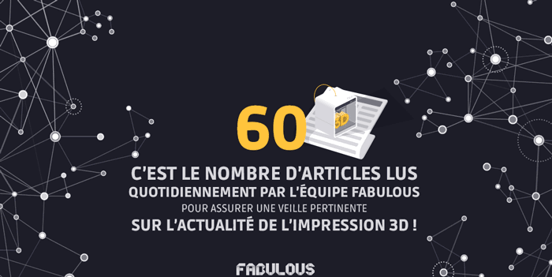
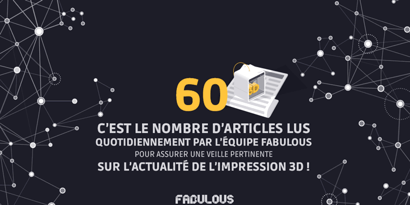

Fabulous
Création de Brand Content Twitter, d'une Newsletter et d'un document de présentation de Fabulous.
Creating Brand Content Twitter, a newsletter and a Fabulous presentation document.
Fabulous est une entreprise de conseils en Impression 3D travaillant étroitement avec Conversationnel dans ses projets et pour la création de son identité visuelle. Cette année Fabulous s'est donné pour objectif d'être plus présent sur les réseaux sociaux (Twitter et LinkedIn) et a donc travaillé avec Conversationnel sur une série de publications présentant des "chiffres clés" concernant l'impression 3D. Pour présenter son catalogue client et son savoir-faire Fabulous a développé avec l'aide de Conversationnel un document interactif à envoyer à chaque nouveau prospect. Pour mettre en avant ses articles de blog Fabulous a voulu effectuer un travail de refonte de sa newsletter. Ainsi le design et l'intégration ont été réalisé dans le but de rester dans la lignée graphique du site et de l'identité de l'entreprise Fabulous.
Fabulous is a consulting 3D printing company. Fabulous work closely with Conversationnel communication agency for its projects and its visual identity. This year, Fabulous has given itself the objective to be more present on social networks (Twitter and Linkedin) and has worked with Conversationnel on a series of publications presenting "key facts and figures" in 3D printing. To present its client catalog and its expertise, Fabulous developed with the help of Conversationnel an interactive document to be sent to each new prospect. To highlight its blog articles, Fabulous made a reworking of its newsletter. The design and integration were realised in order to follow Fabulous visual identity.
 
